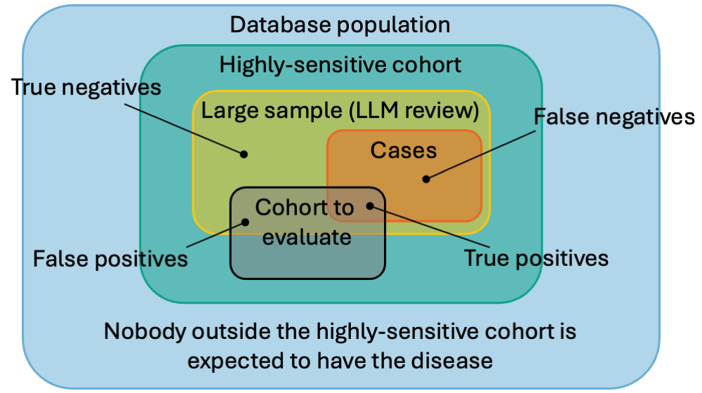

Using Keeper with Large Language Models
Martijn Schuemie
2026-03-26
Source:vignettes/UsingKeeperWithLlms.Rmd
UsingKeeperWithLlms.RmdIntroduction
This vignette demonstrates how to use Keeper to generate patient summaries and systematically review them using a Large Language Model (LLM).
Prerequisites: Before proceeding, ensure you have read the ‘Generating Keeper profiles for review’ vignette. We will build directly on the Type 1 Diabetes Mellitus (T1DM) example established there, assuming you have already created the necessary objects and input concept sets.
Workflow 1: Direct Cohort Review
In this first workflow, we will take an existing cohort, generate Keeper profiles, and use an LLM to evaluate those specific cases. We assume that Keeper has already been executed to produce the following output:
keeper## # A tibble: 2,234 × 8
## generatedId startDay endDay conceptId conceptName category target extraData
## <dbl> <dbl> <dbl> <dbl> <chr> <chr> <chr> <chr>
## 1 16 0 0 NA 67 age Disease… NA
## 2 8 0 0 NA 70 age Disease… NA
## 3 6 0 0 NA 72 age Disease… NA
## 4 14 0 0 NA 61 age Disease… NA
## 5 10 0 0 NA 68 age Disease… NA
## 6 5 0 0 NA 78 age Disease… NA
## 7 7 0 0 NA 70 age Disease… NA
## 8 15 0 0 NA 81 age Disease… NA
## 9 9 0 0 NA 79 age Disease… NA
## 10 13 0 0 NA 79 age Disease… NA
## # ℹ 2,224 more rows1. Choosing an LLM Provider
Keeper integrates with the ellmer package, allowing you
to connect to the LLM provider of your choice (e.g., Anthropic, Google,
OpenAI, or a local model).
For instance, to connect to OpenAI’s ChatGPT, you can use:
library(ellmer)
client <- chat_openai()Note: This requires the OPENAI_API_KEY
environmental variable to be set. For detailed connection instructions
across various providers, refer to the ellmer package
documentation.
Model Requirements: The selected LLM must be capable of advanced reasoning and producing structured outputs. In our testing, OpenAI’s GPT-o3 yielded the best results.
2. Executing the Review
Once connected, we can command the LLM to review the patient cases:
promptSettings <- createPromptSettings()
llmReviews <- reviewCases(
keeper = keeper,
settings = promptSettings,
phenotypeName = "Type I Diabetes Mellitus (T1DM)",
client = client,
cacheFolder = "cache"
)## Reviewing person 1 of 20
## ...
## Reviewing person 20 of 20
## Reviewing cases took 3.9 mins and cost $0.50Key Parameters: * phenotypeName: This
string is inserted directly into the LLM prompt. It must exactly match
the disease you are adjudicating. * cacheFolder: A local
directory where prompts and responses are safely cached. If the process
is interrupted, re-running the function will skip previously generated
responses.
We can inspect the resulting adjudications:
llmReviews## # A tibble: 20 × 9
## generatedId phenotype isCase certainty indexDay justification
## <dbl> <chr> <chr> <chr> <dbl> <chr>
## 1 16 Type I Diabetes Mellitus… yes high 0 "The patient…
## 2 8 Type I Diabetes Mellitus… no high NA "Evidence su…
## 3 6 Type I Diabetes Mellitus… no high NA "Only a sing…
## 4 14 Type I Diabetes Mellitus… no high NA "• Only one …
## 5 10 Type I Diabetes Mellitus… no high NA "The patient…
## 6 5 Type I Diabetes Mellitus… yes low 0 "• The patie…
## 7 7 Type I Diabetes Mellitus… no high NA "Only a sing…
## 8 15 Type I Diabetes Mellitus… yes high 0 "The patient…
## 9 9 Type I Diabetes Mellitus… no high NA "• Only a si…
## 10 13 Type I Diabetes Mellitus… no high NA "Evidence ag…
## 11 17 Type I Diabetes Mellitus… no high NA "Evidence in…
## 12 18 Type I Diabetes Mellitus… no high NA "Only a sing…
## 13 19 Type I Diabetes Mellitus… no low NA "There are o…
## 14 3 Type I Diabetes Mellitus… no high NA "Multiple Ty…
## 15 1 Type I Diabetes Mellitus… yes high 0 "Multiple in…
## 16 2 Type I Diabetes Mellitus… no high NA "Multiple T1…
## 17 12 Type I Diabetes Mellitus… no high NA "The patient…
## 18 11 Type I Diabetes Mellitus… no high NA "Evidence FO…
## 19 20 Type I Diabetes Mellitus… yes high 0 "The patient…
## 20 4 Type I Diabetes Mellitus… no high NA "Only a sing…
## # ℹ 3 more variables: cohortPrevalence <dbl>, model <chr>, keeperVersion <chr>With this data, computing the positive predictive value (PPV) of the reviewed cohort is straightforward:
mean(llmReviews$isCase == "yes")## [1] 0.25Workflow 2: Validating with a Reference Cohort
Instead of analyzing an existing cohort just to find its PPV, we can build a Highly-Sensitive Cohort (HSC). An HSC is designed to be overly broad, ensuring no true cases are missed.
By taking a large sample of this HSC and having an LLM review it, we create a gold-standard Reference Cohort. This reference cohort can then be used to rapidly evaluate the PPV and sensitivity of any other cohort definitions for the same phenotype.

1. Creating the Highly-Sensitive Cohort
The createSensitiveCohort() function automatically
constructs this broad cohort using the same input concept sets utilized
by generateKeeper().
The cohort is constructed by combining two sets:
Anybody who has one of the condition concepts of the disease of interest, indexed on the first occurrence.
Anybody who has ‘highly specific concepts’ from at least two Keeper categories (symptoms, drugs, etc.), indexed on the first occurrence.
Highly specific concepts are concepts where at least 10% of those who have that concept also have a condition concept for the disease of interest.
createSensitiveCohort(
connectionDetails = connectionDetails,
cdmDatabaseSchema = cdmDatabaseSchema,
cohortDatabaseSchema = cohortDatabaseSchema,
cohortTable = cohortTable,
cohortDefinitionId = 2,
createCohortTable = FALSE,
keeperConceptSets = conceptSets
)Here, we assign cohortDefinitionId = 2 to prevent
overwriting the simpler cohort (ID 1) we created in the previous
vignette.
2. Running Keeper on the HSC
Next, we extract the patient profiles for our new sensitive cohort:
keeperHsc <- generateKeeper(
connectionDetails = connectionDetails,
cohortDatabaseSchema = cohortDatabaseSchema,
cdmDatabaseSchema = cdmDatabaseSchema,
cohortTable = cohortTable,
cohortDefinitionId = 2,
sampleSize = 10000,
phenotypeName = "Type I Diabetes Mellitus (T1DM)",
keeperConceptSets = conceptSets,
removePii = FALSE
)Important considerations: * Sample
Size: We sample 10,000 persons to guarantee enough true
positive cases for robust PPV and sensitivity calculations. *
PII Handling: We set removePii = FALSE so
that the resulting LLM adjudications can be joined accurately with
specific target cohorts later during evaluation.
3. Adjudicating the HSC via LLM
We now send all 10,000 sampled profiles to the LLM for review.
Cost Warning: Adjudicating a dataset of this size can incur significant API costs. For example, using our preferred model (GPT-o3) to review 10,000 cases typically costs between $60 and $80.
promptSettings <- createPromptSettings()
llmReviewsHsc <- reviewCases(
keeper = keeperHsc,
settings = promptSettings,
client = client,
cacheFolder = "cacheVignetteHsc"
)Once complete, this dataset becomes our Reference Cohort.
4. Storing the Reference Cohort
To use the reference cohort across different analyses, we upload it back to our database server:
referenceCohortDatabaseSchema <- "cdm"
referenceCohortTable <- "reference_cohort"
uploadReferenceCohort(
connectionDetails = connectionDetails,
referenceCohortDatabaseSchema = referenceCohortDatabaseSchema,
referenceCohortTableNames = createReferenceCohortTableNames(referenceCohortTable),
referenceCohortDefinitionId = 1,
createReferenceCohortTables = TRUE,
reviews = llmReviewsHsc
)Setting createReferenceCohortTables = TRUE generates two
tables (reference_cohort and
reference_cohort_metadata). We also assign a
referenceCohortDefinitionId of 1 to uniquely
identify it for future comparisons.
5. Evaluating Target Cohorts
With our reference cohort safely stored in the database, evaluating
any standard T1DM cohort is highly efficient. Let’s evaluate the simple
target cohort (cohortDefinitionId = 1) from the previous
vignette:
metrics <- computeCohortOperatingCharacteristics(
connectionDetails = connectionDetails,
cohortDatabaseSchema = cohortDatabaseSchema,
cohortTable = cohortTable,
cohortDefinitionId = 1,
referenceCohortDatabaseSchema = referenceCohortDatabaseSchema,
referenceCohortTableNames = createReferenceCohortTableNames(referenceCohortTable),
referenceCohortDefinitionId = 1
)Finally, we can view the computed performance metrics (such as sensitivity, specificity, and PPV) for our target cohort:
metrics## # A tibble: 3 × 21
## certainty tp fp tn fn sensitivity sensitivityLb sensitivityUb
## <chr> <dbl> <dbl> <dbl> <dbl> <dbl> <dbl> <dbl>
## 1 low 100 20 57 55 0.645 0.564 0.720
## 2 high 941 215 8358 7 0.993 0.985 0.997
## 3 all 1041 235 8415 62 0.944 0.929 0.957
## # ℹ 13 more variables: specificity <dbl>, specificityLb <dbl>,
## # specificityUb <dbl>, specificityOverall <dbl>, specificityOverallLb <dbl>,
## # specificityOverallUb <dbl>, ppv <dbl>, ppvLb <dbl>, ppvUb <dbl>, auc <dbl>,
## # kappa <dbl>, prevalence <dbl>, prevalenceOverall <dbl>